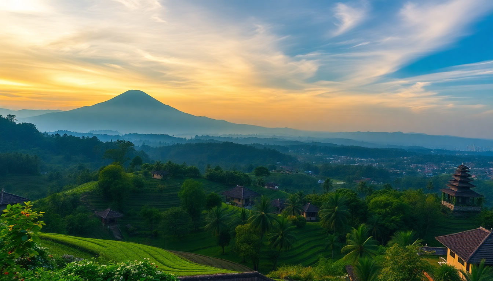

Best Day Trips from Ubud: Tegallalang, Mount Batur & Tirta Empul

I spent a week based in Ubud, and the three most popular day trips—Tegallalang, Mount Batur, and Tirta Empul—kept popping up in every conversation with other travelers. So I did all three. Here’s what actually worked, what didn’t, and how to avoid the crowds.
Is the Tegallalang Rice Terrace worth the hype?
Yes, but only if you go early. I rolled up at 8 AM and had the main viewpoint almost to myself. By 10 AM, the parking lot was chaos, and tour buses were bumper-to-bumper.
The terraces themselves are stunning—those classic postcard curves cut into the hillside. But the “swing” photo ops (the ones dangling over the valley) are a separate paid attraction. I skipped them. The walk through the paddies costs 50,000 IDR (about $3 USD) and takes about 40 minutes if you go down into the valley and back up. Wear shoes with grip; the paths get slippery.
What to know before you go:
- Best time: 7:30–9 AM. After that, the light gets harsh and the crowds arrive.
- Entry fee: 50,000 IDR per person, paid at the main gate.
- Parking: Free for scooters, 5,000 IDR for cars—but the lot fills fast.
- Nearby stop: Alas Harum is a café complex with a view and a cheaper swing (100,000 IDR) if you really want the photo.
- Avoid: The “coffee plantation” tours right at the entrance. They push overpriced luwak coffee samples hard.
Can you climb Mount Batur as a day trip from Ubud?
You can, but “day trip” is a stretch. I booked a private driver through my homestay for 450,000 IDR round trip. Pickup was at 1:30 AM. Yes, that’s the middle of the night. The drive to the trailhead takes about 90 minutes.
The trek itself is steep but not technical—no ropes or climbing gear needed. The last 200 meters are loose volcanic scree, which is annoying in the dark. I used a headlamp my guide provided, but bring your own if you have one. At the summit, you wait for sunrise. The view over Lake Batur and Mount Agung in the background is genuinely impressive. The crater rim is wide enough to walk along, and you’ll see steam vents where guides boil eggs for breakfast.
Honest reality check:
- Cost: 850,000–1,200,000 IDR per person for a guided trek (includes transport, entry, and breakfast).
- Difficulty: Moderate. I’m not fit and made it in 2 hours up, 1.5 hours down.
- Crowds: The summit gets packed. Expect 100+ people at the top. Find a spot away from the main group for photos.
- What to bring: A jacket (it’s cold at 1,717 meters before sunrise), water, and cash for the toilet at the trailhead (5,000 IDR).
- Skip if: You hate early mornings or have bad knees—the descent is hard on joints.
Is Tirta Empul too touristy to enjoy?
Tirta Empul is the holy water temple where locals and tourists alike do the purification ritual. I went on a weekday at 3 PM, and it was busy but not overwhelming.
The ritual is simple: you walk into a rectangular pool with 13 spouts, each one representing a different intention (health, wealth, cleansing of bad luck, etc.). You start at the first spout, bow, and dunk your head under. Then move left to the next, and repeat. Locals do this seriously—some stay for an hour. I did the full circuit in about 15 minutes.
Practical tips for the temple:
- Entry fee: 50,000 IDR for adults. Sarongs are provided free at the entrance.
- Ritual rules: You must wear a sarong and sash (provided). No shorts or bare shoulders.
- Water temperature: Cold. Refreshing on a hot day, but brace yourself.
- Photography: Fine on the walkways, but don’t take photos of people mid-ritual without asking.
- Best time: Late afternoon (3–4 PM) for softer light and fewer tour groups.
- Nearby lunch: Warung D’Kampung serves good nasi campur for 30,000 IDR, a 5-minute drive south.
How should you combine these three trips in one day?
You can do all three in a single day, but I wouldn’t recommend it unless you’re on a tight schedule. The geography works: Tegallalang, Tirta Empul, and Mount Batur are all north of Ubud, roughly along the same road. But Mount Batur requires a separate early morning slot.
My recommended split:
- Day 1: Mount Batur sunrise trek (1:30 AM–10 AM). Sleep after lunch.
- Day 2: Morning at Tegallalang (7:30–9:30 AM), then Tirta Empul (10:30 AM–12 PM). Lunch at Warung D’Kampung, then back to Ubud by 2 PM.
If you really want to cram them into one day, start with Mount Batur at 1:30 AM, finish by 10 AM, drive 30 minutes to Tegallalang (arrive 11 AM—busy but doable), then 15 minutes to Tirta Empul by 1 PM. You’ll be back in Ubud by 3 PM.
Where should you stay in Ubud for these trips?
Base yourself north of the Ubud Palace to cut drive time. I stayed at Puri Garden Hotel on Jalan Raya Ubud—a solid mid-range spot with a pool and included breakfast. It’s a 30-minute drive to Tegallalang and 45 minutes to the Mount Batur trailhead.
For budget travelers, Alam Shanti near the Monkey Forest is quieter and cheaper, but adds 15 minutes to your drive north. If you want luxury, Komaneka at Bisma is a 5-star with rice-field views and a spa, but you’ll pay 4x more.
Quick hotel tips:
- Puri Garden Hotel: Great location, decent breakfast, around 400,000 IDR/night.
- Alam Shanti: Peaceful, garden setting, 250,000 IDR/night.
- Komaneka at Bisma: High-end, pool overlooking valley, 1,500,000+ IDR/night.
- Booking strategy: Book directly or on a site with free cancellation. Ubud hotels fill up during July–August and December.
FAQ
Is the Mount Batur sunrise trek safe for beginners? Yes, it’s safe for anyone with basic fitness and no serious medical conditions. The path is well-trodden, and guides are mandatory—they carry first aid kits and know the route. I saw a 60-year-old woman make it to the top. The main risk is slipping on the scree near the summit, so wear hiking shoes or trail runners, not flip-flops.
Do I need a guide for Tegallalang and Tirta Empul? No. Both are self-guided. Tegallalang has a clear walking path through the terraces, and Tirta Empul has signs explaining the purification ritual. A driver can drop you at the entrance and wait. I paid my driver 350,000 IDR for a half-day (08:00–13:00) to do both.
What’s the best way to get from Ubud to these places? Rent a scooter (70,000 IDR/day) if you’re confident on two wheels—traffic north of Ubud is light compared to the center. Otherwise, hire a private driver for 350,000–500,000 IDR for a half-day. Avoid group tours; they rush you and stop at commission-heavy shops.
Conclusion
- Tegallalang is worth the detour only if you arrive before 9 AM. After that, the crowds kill the vibe.
- Mount Batur is a solid sunrise trek, but the 1:30 AM wake-up is rough. Bring layers and expect a packed summit.
- Tirta Empul is the most accessible of the three—cheap, quick, and culturally interesting. The purification ritual is genuinely calming, not a gimmick.
- Combine Tegallalang and Tirta Empul in one morning, then do Mount Batur on a separate day. Trying to squeeze all three into 24 hours will exhaust you.
- Skip the overpriced swings and coffee plantations at Tegallalang. Spend that time walking the rice terraces instead.